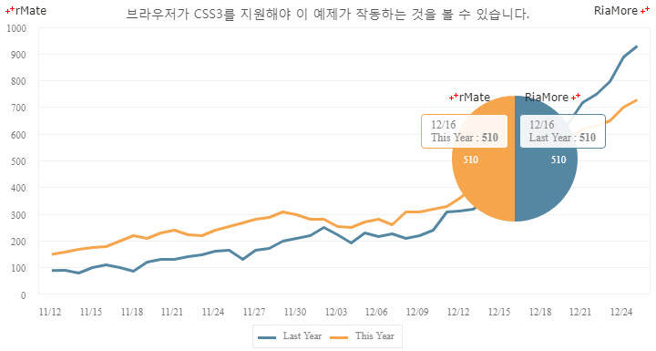
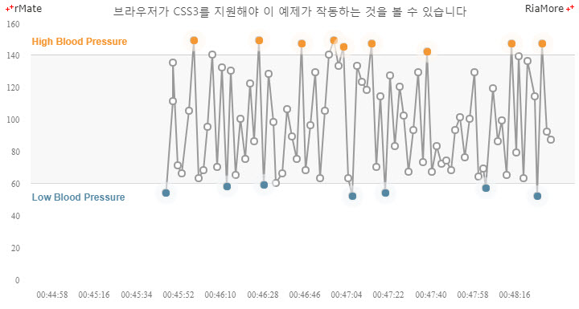
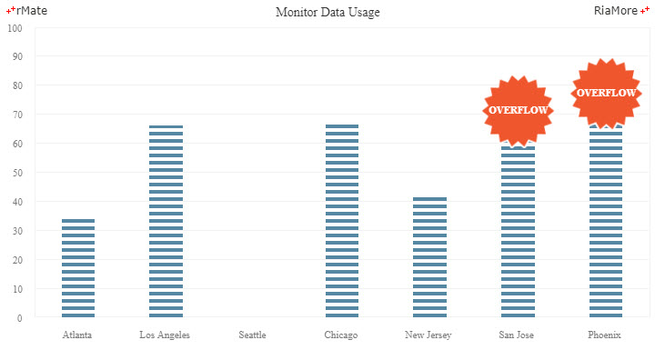
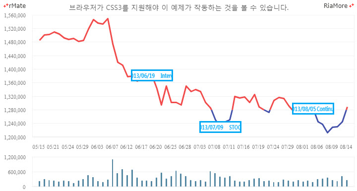
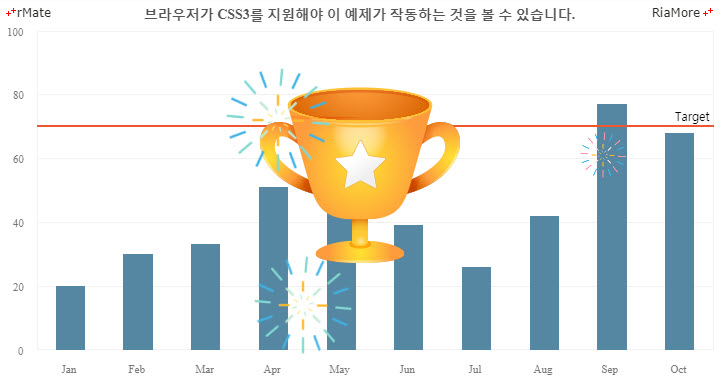
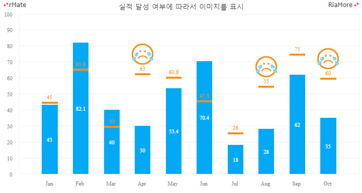

이벤트 차트
이벤트 차트는 독립적인 차트 유형이 아니라 차트의 데이터가 미리 정의된 특정 조건을 만족하는 경우, 해당 데이터 포인트에 이미지 표현 혹은 애니메이션 효과를 통해서 사용자에게 높은 시각적 정보를 제공하는 기능이라고 할 수 있습니다.
이벤트 차트 기능을 구현하려면 데이터 시리즈 노드(<Line2DSeries>, <Equalizer2DSeries>, 등)의 htmlJsFunction 속성에 이벤트 처리를 실행하는 자바스트립트 함수명을 지정해야 합니다.
데이터 포인트에 차트 표시
다음은 라인 차트에서 금년도 값이 전년도 값보다 같거나 커지는 지점(데이터 포인트)에 애니메이션 효과를 표현하고, 사용자가 해당 지점(데이터 포인트)에 마우스 오버를 하면 파이 차트를 생성하는 코드와 이를 적용해서 출력한 차트의 예제입니다.
<Line2DSeries xField="Date" yField="Data2" htmlJsFunction="userFunction" displayName="Last Year">
function userFunction(id, index, data, values) {
var past = data.Data1,
current = data.Data2;
if(past <= current) {
if (document.getElementsByClassName("chart_animate_element").length > 0)
return;
return {
content : "",
className : "chart_animate_element",
events : {
"mouseover" : function(event){
if(currentPointChartId.length > 0)
return;
currentPointElem = event.target;
var target = event.currentTarget;
var div = document.createElement("div");
var chartId;
div.id = "tooltip_chartHolder_" + Math.floor(Math.random() * 1000);
div.className = "tooltip_chart";
target.appendChild(div);
chartId = div.id.replace("Holder", "");
currentPointChartId = chartId;
rMateChartH5.create(chartId, div.id, "", "100%", "100%", function(id){
document.getElementById(id).setLayout(layoutStr2);
document.getElementById(id).setData(chartData2);
});
},
"mouseout" : function(event){
var target = event.relatedTarget;
while(target) {
if(target === currentPointElem)
return;
target = target.parentNode;
}
document.getElementById(currentPointChartId).destroy();
currentPointElem.removeChild(document.getElementById(currentPointChartId.replace("chart", "chartHolder")));
currentPointChartId = "";
}
}
};
}
return;
}

See the CodePen 알메이트 차트 - 데이터 포인트에 차트 표시
위 예제에서는 애니메이션 효과를 표현하기 위해서 해당 데이터 포인트에 CSS 스타일 (chart_animate_element)을 적용하였습니다.
다음은 적용된 CSS 스타일의 소스 코드입니다.
.chart_animate_element{
width:12px;
height:12px;
border-radius:100%;
box-sizing:border-box;
border-color:#20ccc1;
background-color:#20ccc1;
animation:animate 2s 0s ease-out infinite
}
@keyframes animate{
0%{box-shadow:0 0 4px 3px rgba(32, 204, 193, 0), 0 0 0px 0px rgba(255, 255, 255, 0.5), 0 0 0px 0px rgba(32, 204, 193, 0);}
10%{box-shadow:0 0 4px 3px rgba(32, 204, 193, 0.5), 0 0 6px 5px rgba(255, 255, 255, 0.5), 0 0 6px 7px rgba(32, 204, 193, 0.5);}
100%{box-shadow:0 0 4px 3px rgba(32, 204, 193, 0), 0 0 0px 20px rgba(255, 255, 255, 0.5), 0 0 0px 20px rgba(32, 204, 193, 0);}
}
@-webkit-keyframes animate{
0%{box-shadow:0 0 4px 3px rgba(32, 204, 193, 0), 0 0 0px 0px rgba(255, 255, 255, 0.5), 0 0 0px 0px rgba(32, 204, 193, 0);}
10%{box-shadow:0 0 4px 3px rgba(32, 204, 193, 0.5), 0 0 6px 5px rgba(255, 255, 255, 0.5), 0 0 6px 7px rgba(32, 204, 193, 0.5);}
100%{box-shadow:0 0 4px 3px rgba(32, 204, 193, 0), 0 0 0px 20px rgba(255, 255, 255, 0.5), 0 0 0px 20px rgba(32, 204, 193, 0);}
}
데이터 포인트에 경고 표시
다음은 혈압을 체크하는 실시간 차트에서 미리 정해진 범위의 혈압 수치를 벗어날 경우(고혈압, 저혈압), 해당 데이터 포인트에 경고 표시를 하는 코드와 이를 적용해서 출력한 차트의 예제입니다.
<Line2DSeries xField="Time" yField="Data" displayName="Process 1" htmlJsFunction="userFunction" itemRenderer="CircleItemRenderer">
function userFunction(id, index, data, values){
var className = "high",
value = values[1];
if(value < minValue || value > maxValue){
if(value < minValue)
className = "low";
return {
content : "",
className : "odd_pressure " + className + "_blood_pressure",
events : {
"click" : (function(a){
return function(event){
event.target.parentNode.removeChild(event.target);
alert("Time: " + a.Time + "\nBlood Pressure: " + a.Data);
};
})(data)
}
};
}
return;
}

See the CodePen 알메이트 차트 - 데이터 포인트에 경고 표시
위 예제에서는 경고 표시를 하기 위해서 해당 데이터 포인트에 CSS 스타일 ("odd_pressure " + className + "_blood_pressure")을 적용하였고, 경고가 표시된 데이터 포인트에 마우스를 클릭할 경우 혈압 수치를 메시지로 표시합니다.
다음은 데이터 사용량을 표시하는 이퀄라이저 차트에서 사용량이 미리 정의한 값 (“70”) 보다 클 경우 해당 데이터 포인트에 오버플로우 경고 표시를 하는 코드와 이를 적용해서 출력한 차트의 예제입니다.
<Equalizer2DSeries yField="value" showDataEffect="{ss}" htmlJsFunction="userFunction">
function userFunction(id, index, data, values){
var value = values[1];
if (value > 70) {
return {
content : "OVERFLOW",
className : "data_overflow"
};
}
return;
}

See the CodePen 알메이트 차트 - 이퀄라이저 차트에서 경고 표시
데이터 포인트에 롤링 텍스트 표시
다음은 캔들라인 차트에서 특정 일(X 축 값)의 데이터 포인트에 롤링 텍스트를 표시하는 코드와 이를 적용해서 출력한 차트의 예제입니다.
<CandleLine2DSeries yField="open" htmlJsFunction="userFunction">
function userFunction(id, index, data, values){
var rollDiv,
yValue = values[1], // Y-axis value
xValue = values[0]; //"2013/0705";
if (xValue == "2013/06/19")
rollDiv = getRollDiv(xValue, "Interest rate hikes", "Stock collapse");
else if(xValue == "2013/07/09")
rollDiv = getRollDiv(xValue, "STOCK STIMULUS", "10% Rise");
else if(xValue == "2013/08/05")
rollDiv = getRollDiv(xValue, "Continuous interest rate hikes", "Stock collapse");
if (rollDiv)
return {
content : rollDiv,
className : "roll_wrapper"
};
}
function getRollDiv(date, str1, str2){
var wrapDiv = document.createElement("div"),
dateDiv = document.createElement("div"),
contentDiv1 = document.createElement("div"),
contentDiv2 = document.createElement("div");
wrapDiv.className = "wrapDiv";
dateDiv.innerHTML = date;
dateDiv.className = "dateDiv";
contentDiv1.innerHTML = str1;
contentDiv1.className = "contentDiv1";
contentDiv2.innerHTML = str2;
contentDiv2.className = "contentDiv2";
wrapDiv.appendChild(dateDiv);
wrapDiv.appendChild(contentDiv1);
wrapDiv.appendChild(contentDiv2);
return wrapDiv;
}

See the CodePen 알메이트 차트 - 데이터 포인트에 롤링 텍스트 표시
위 예제에서는 특정 일의 데이터 포인트에 div 를 생성하고 해당 div 에 CSS 스타일(wrapDiv, dateDiv, contentDiv1, contentDiv2)을 적용하여 롤링 텍스트를 표시합니다.
데이터 포인트에 애니메이션 GIF 표시
특정 조건을 만족하는 데이터 포인트에 애니메이션 GIF를 표시할 수도 있습니다.
다음은 애니메이션 GIF 가 표시될 div 를 생성하고 CSS 스타일을 적용하여 특정 데이터 포인트에 애니메이션 GIF 를 표시하는 두 가지 예제입니다.

See the CodePen 알메이트 차트 - 컬럼 차트에서 애니메이션 GIF 표시

See the CodePen 알메이트 차트 - 데이터 포인트에 애니메이션 GIF 표시